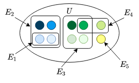
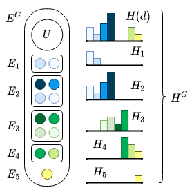
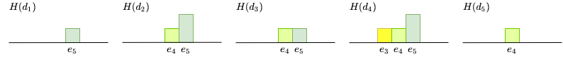
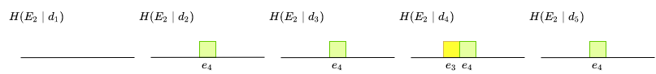

[DRAFT] Histogram Model
by Sergei Papulin (papulin.edu@gmail.com)
Contents
- Introduction
- Histogram
- Histogram Algebraic System
- Examples
- Discussion
- Conclusion
- References
1. Introduction
Histogram model can be used for data analysis and information retrieval based on the number of occurrences of elements that make up data instances. The basic unit of computation here is a histogram.
Next in this paper different types of histograms will be discussed, and then the histogram algebraic system will be introduced that is the main component of the histogram model. Finally, some simple examples of use of the histogram model will be considered.
2. Histograms
2.1. Basic definitions
Each data instance (e.g. document, image etc.), d, is supposed to consist of elements of the universal set, U.
In the histogram model two types of histograms are distinguished: a histogram of data instance, H(d), and histogram of elements given a data instance, H(X∣d).
Histogram of a data instance, H(d), describes the number of occurrences of elements of the universal set, U. So, each element of histogram corresponds to a single element of the universal set, x∈U.
Histogram of elements given a data instance, H(X∣d), is a histogram of a data instance that is limited to elements of X⊆U, and other elements are disregarded. When X corresponds to U, H(U∣d) is equal to H(d).
Look at Table 1 for a few more notations that will be used later.
Table 1. Basic notations
| Symbol |
Definition |
| U |
Universal set (all possible elements that make up data instances) |
| x |
Element of the universal set, x∈U |
| d |
Data instance |
| N(d) |
The total number of elements in d |
| X |
High-level element that is a subset of the universal set, X⊆U |
| H(d) |
Histogram of a data instance |
| h(x∣d) |
Value that corresponds to element x of histogram H(d) |
| H(X∣d) |
Histogram of high-level element X given a data instance d |
| h(x∣X,d) |
Value that corresponds to element x of histogram H(X∣d) |
Now let's consider the histogram types mentioned above in detail.
2.2. Histogram of data instance
There are multiple notations for histograms [2]. For example, we can consider a histogram as a union of elements:
H(d)=(H∣H=x∈U⋃h(x∣d)/x,0≤h(x∣d)≤N(d),x∈U∑h(x∣d)=N(d)),where h(x∣d)/x denotes existence of element x and its occurrence value, h(x∣d), in document d.
Alternatively, we can represent a histogram using an ordered list
H(d)=(h(e1),⋯,h(en)∣h(x)=h(x∣d),0≤h(x)≤N(d),x∈U∑h(x)=N(d)).It's often helpful to use a normalized form, where each element x of a histogram calculated as
h(x∣d)=N(d)n(x∣d),where n(x∣) is the number of element x in a data instance.
So, the normalized histogram can be written as
H(d)=(h(e1),⋯,h(en)∣h(x)=h(x∣d),0≤h(x)≤1,x∈U∑h(x)=1),where h(x∣d) refers to the normalized form of the number of occurrences.
This notation of histograms will be used further throughout the paper.
Simple example of the universal set, a data instance and its histogram can be found in Figure 1.
Figure 1. Representation of a data instance: (a) the universal set, (b) a data instance and (c) its histogram
2.3. Histogram of elements given data instance
Let's denote a subset of U as X. If U is a finite set, then the set of all subsets of U, or the σ-algebra over U, is defined as follows
EG={X∣X⊆U}.Given the aforementioned example of the universal set (see Figure 1), some high-level elements of EG can be represented as shown in Figure 2.

Figure 2. Example of the universal set and high-level elements
Each element X in EG can be mapped to its histogram H(X∣d). So, the whole set of histograms for EG given a data instance d is
HG(d)={H(X∣d)∣X∈EG}or
HG(d)={(h(e1),⋯,h(en))∣0≤h(x)≤h(x∣d),x∈X∑h(x)≤1,X⊆U}.The above definition is a general form. To be more specific, we can distinguish a restricted (or binary) form:
HG(d)={(h(e1),⋯,h(en))∣h(x)∈{0,h(x∣d)},x∈X∑h(x)≤1,X⊆U}.And a single mapping X to H(X∣x) can be defined as follows
H(X∣d)=(h(e1),⋯,h(en)∣h(x)={h(x∣d)ifx∈X,0otherwise)∈HG(d).An example of some high-level elements and their histograms are shown in Figure 3 (for simplicity, Hi corresponds to H(Ei∣d) and Ei∈EG).

Figure 3. Example of a set of high-level elements and their histograms given data instance
Sum of all elements of a histogram (the counting measure) is written as
μ(H(d))=ΣH(d)=x∈U∑h(x∣d)or
μ(H(X∣d))=ΣH(X∣d)=x∈U∑h(x∣X,d).And we can define a measurable space
(U,EG,μ).So, the number of occurrences for a given X and d is a sum of elements of histogram H(X∣d).
3. Histogram Algebraic System
3.1. Basic definition
As any algebraic system, the histogram one consists of a carrier set and a set of operations. Here HG is used as a carrier set, and assumed to be in the binary form (note that for fuzzy elements, for example, the binary form is not applicable and must be used the general one as shown in [5]).
So, the histogram algebraic system can be denoted as follows
H=⟨HG,∩,∪,∧,∨˙,∨,\˙,∖,−,0,1⟩,where constants are defined as
0=H0=(h(e1),⋯,h(en)∣h(x)=0,x∈U)1=H1=H(d)=(h(e1),⋯,h(en)∣h(x)=h(x∣d),x∈U,x∈U∑h(x)=1)Now, let's define the operations of the system. In general, they can be divided into two categories: set and logical operations. The set operations modify composition of histograms of high-level elements. They can be defined as follows:
H1∪H2=(h(e1),⋯,h(en)∣h(x)=max(h(x∣X1,d),h(x∣X2,d))).
H1∩H2=(h(e1),⋯,h(en)∣h(x)=min(h(x∣X1,d),h(x∣X2,d))).
H1∖H2=(h(e1),⋯,h(en)∣h(x)={h(x∣X1,d)ifh(x∣X2,d)=0,0otherwise),where Hi=H(Xi∣d) and Xi∈EG.
H=(h(e1),⋯,h(en)∣h(x)={h(x∣d)ifh(x∣X,d)=0,0otherwise)or
H=1∖H,where H=H(X∣d) and X∈EG.
The logical operations refer to description of content of a data instance basically without changing the histogram (except OR) that are involved in calculation. The list of these operations are shown below:
H1∧H2={H1ifΣH1<ΣH2,H2otherwise.
- OR (it is equal to the union operation)
H1∨H2=(H(e1),⋯,H(en)∣h(x)=max(h(x∣X1,d),h(x∣X2,d))).
H1∨˙H2={H1ifΣH1>ΣH2,H2otherwise.
H1\˙H2={0ifΣH2>0,H1otherwise.
¬H={0if∃x∋h(x∣X,d)>0,1otherwiseor
¬H=1∖˙H∈{0,1}.Properties of some operations and their combinations were considered in [1].
Let's introduce additional operations for AND and excursive OR that takes into account overlapping high-level elements X1 and X2 (examples that demonstrate the meaning of these operations will be shown later):
- AND that doesn't account common elements of X1 and X2:
H1∧1H2=(H1∖H2)∧(H2∖H1).
- AND that assigns common elements to X1 and excludes from X2 and vice versa, and finally compares results:
H1∧2H2=(H1∧(H2∖H1))∨˙(H2∧(H1∖H2)).
- Exclusive OR that doesn't account common elements of X1 and X2:
H1∨˙1H2=(H1∖H2)∨˙(H2∖H1).
- Exclusive OR that assigns common elements to X1 and excludes from X2 and vice versa, and finally compares results:
H1∨˙2H2=(H1∨˙(H2∖H1))∧(H2∨˙(H1∖H2)).
- Exclusive OR that excludes common elements of X1 and X2 and only one of them must have a non-zero histogram to get a value other than the zero histogram:
H1∨˙3H2=(H1∖˙H2)∨˙(H2∖˙H1).If we have an expression with m elements of EG, we should translate each element Xi to Hi:
Expression(X1,X2,⋯,Xm;O)→Expression(H1,H2,⋯,Hm;O),where O refers to the operations.
Then we can find a resulting histogram by evaluating the expression using the histogram algebraic system
Expression(H1,H2,⋯,Hm;O)→H∈HG.
3.2. Rules of usage
Set and logical operations have different bases, and the algebraic system imposes constraints on use of the operations in expressions. So, the basic rule is the following:
Set operations should be applied before logic operations.
For example,
(((H1∩H2)∖(H3∪H4))∨˙H5)∧H6.Some combinations that break the basic rule should be transformed to be more reasonable in the sense of reflecting meaning, rather than mathematics, e.g.
(X1∨˙X2)∖X3→(X1∖X3)∨˙(X2∖X3),(X1∧X2)∖X3→(X1∖X3)∧(X2∖X3),(X1∨˙X2)∖˙X3→(X1∖˙X3)∨˙(X2∖˙X3),(X1∧X2)∖˙X3→(X1∖˙X3)∧(X2∖˙X3).
3.3. Queries
As mentioned in the introduction, the histogram model can be applied for information retrieval [3,4,6]. There are two basic types of queries that can be used: expressions and samples.
Expressions as a query
In this case, a query can be specified by elements of EG and operations of the histogram model in the following way
q=Expression(X1,X2,⋯,Xm).To calculate a value of similarity between the query and data instances, it's necessary to evaluate the histogram expression and sum the values of the resulting histogram:
sim(q,d)=x∈U∑Expression(H1,H2,⋯,Hm;O)=ΣH.Generally, when we use complex expressions, resulting histograms may not reflect really the number of occurrences of expressions given a data instance. Think of, for example, the AND operation. It returns one of the operands, H1 or H2. Here the result is just based on the number of occurrences of elements X1 and X2 in d. So the term "value of expression" is more appropriate instead of "number of occurrences of expression". But when we talk about a histogram of a single high-level element X, it's possible to say the number of occurrences X given d.
Sample as a query
One way to calculate similarity between two data instances d and dsample is to intersect their histograms H(d) and H(dsample). This can be written as
sim(dsample,d)=min(H(dsample),H(d)))=(h(e1),⋯,h(en)∣h(x)=min(h(x∣dsample),h(x∣d))).So, the histogram representation of data instances is an appropriate form for using different types of queries that is a useful feature for information retrieval systems.
4. Examples
Now let's consider some examples that shed light on some nuances of the histogram model and use of its operations. This section will be divided into three parts. The first two will demonstrate the use of the operations for non-overlapping and overlapping high-level elements, respectively, and then difference between the various definitions of AND and Exclusive OR will be shown.
Non-overlapping high-level elements
The following high-level elements are considered here:
E1={e1,e2},E2={e4,e5}.The elements are not overlapping. Let's take 4 data instances and construct their histograms, and histograms of elements E1 and E2 as shown in Figure 4.
Figure 4. Example for non-overlapping high-level elements: (a) data instances, (b) their histograms, (c) and (d) histograms of elements. Note: For simplicity, only two elements are shown
Now let's apply the all operations that was introduced previously. Table 2 contains the resulting values of those expressions.
Table 2. Results of evaluating expressions with non-overlapping high-level elements and various operations (note that the histograms are not normalized here)
|
E1∪E2 |
E1∩E2 |
E1∖E2 |
E1∧E2 |
E1∧1E2 |
E1∧2E2 |
E1∨E2 |
E1∨˙E2 |
E1∨˙1E2 |
E1∨˙2E2 |
E1∨˙3E2 |
E1∖˙E2 |
| d1 |
1 |
0 |
1 |
0 |
0 |
0 |
1 |
1 |
1 |
1 |
1 |
1 |
| d2 |
2 |
0 |
1 |
1 |
1 |
1 |
2 |
1 |
1 |
1 |
0 |
0 |
| d3 |
3 |
0 |
1 |
1 |
1 |
1 |
3 |
2 |
2 |
2 |
0 |
0 |
| d4 |
1 |
0 |
0 |
0 |
0 |
0 |
1 |
1 |
1 |
1 |
1 |
0 |
Overlapping high-level elements
In this case, we have two high-level elements E1 and E2 that have one common element e4:
E1={e4,e5},E2={e3,e4}.As before, let's take 4 data instances and construct their histograms, and histograms of elements E1 and E2 as shown in Figure 5.

a)
|
|

b)
|

c)
|
|

d)
|
Figure 5. Example for overlapping high-level elements: (a) data instances, (b) their histograms, (c) and (d) histograms of elements. Note: For simplicity, only two elements are shown
In Table 3 you can find the resulting values of the expressions.
Table 3. Results of evaluating expressions with overlapping high-level elements and various operations (note that the histograms are not normalized here)
|
E1∪E2 |
E1∩E2 |
E1∖E2 |
E1∧E2 |
E1∧1E2 |
E1∧2E2 |
E1∨E2 |
E1∨˙E2 |
E1∨˙1E2 |
E1∨˙2E2 |
E1∨˙3E2 |
E1∖˙E2 |
| d1 |
1 |
0 |
1 |
0 |
0 |
0 |
1 |
1 |
1 |
1 |
1 |
1 |
| d2 |
3 |
1 |
2 |
1 |
0 |
1 |
3 |
3 |
2 |
2 |
0 |
0 |
| d3 |
2 |
1 |
1 |
1 |
0 |
1 |
2 |
2 |
1 |
1 |
0 |
0 |
| d4 |
4 |
1 |
2 |
2 |
1 |
2 |
4 |
3 |
2 |
2 |
0 |
0 |
| d5 |
1 |
1 |
0 |
1 |
0 |
0 |
1 |
1 |
0 |
1 |
0 |
0 |
TODO: Leave some comments about difference of use of AND and Exclusive OR for non-overlapping and overlapping elements
For non-overlapping elements, operations "$\dot\lor$" and "$\dot\lor_{1}$" lead to the same result.
Comparison various definitions of AND and Exclusive OR
To get better idea about difference between various of definitions of AND and Exclusive OR, turn to Figure 7 and Figure 8, respectively.
 Figure 6. High-level elements for comparison AND and Exclusive OR
Figure 6. High-level elements for comparison AND and Exclusive OR
Figure 7. Comparison of different types of the AND operation
TODO: Leave some comments about difference of use of AND
Figure 8. Comparison of different types of the Exclusive OR operation
TODO: Leave some comments about difference of use of Exclusive OR
5. Discussion
TODO
Table 4. Basic models
| Model |
Meaning of Element |
| Sets |
Membership |
| Logic |
Truth/falsity |
| Fuzzy sets |
Degree of membership |
| Probability |
Probability of outcome |
| Histogram |
Occurrences |
5.1. Histogram model vs set model
TODO
5.2. Histogram model vs logic model
TODO
5.3. Histogram model vs probability model
A common approach for probability estimation is based on the number of occurrences for a particular outcome divided by the number of all observed outcomes. In histogram model we deal with the number of occurrences directly (or using a normalized form as well) and we don't calculate any probabilities. As a result, operations over probabilities are not applied to histograms. Moreover, the histogram algebraic system works with vectors (histograms) as a single unit.
TODO: Describe how we can come to probabilities from the histogram model
5.4. Histogram model vs fuzzy set model
The most obvious difference between these two models from a mathematical point of view is that a histogram is restricted by the the number of elements of a data instance, whereas a fuzzy set has no such limitations. For example, if we take a normalized histogram, sum of its elements can not more than 1, whereas for a fuzzy set, each of its element can be from 0 to 1.
As known, the fuzzy sets don't follow the law of contradiction and the law of excluded middle. In turn, the histogram model complies with the laws as shown below, respectively (over two operations: union and intersection):
H∩H=0,H∪H=1.This feature is inherited from the sets.
6. Conclusion
TODO
7. References
- Папулин, С.Ю. Свойства бинарных операций логико-гистограммного представления данных / С.Ю. Папулин // Наукоемкие технологии и интеллектуальные системы 2013: материалы 15-ой молодежной международной науч.-технич. конф. – М.: Моск. гос. техн. университет им. Н.Э. Баумана, 2013. – С. 118–124.
- Папулин, С.Ю. Виды гистограммных представлений данных в логико-множественной модели представления / С.Ю. Папулин // Наукоемкие технологии и интеллектуальные системы 2014: материалы 16-ой молодежной международной науч.-технич. конф. – М.: Моск. гос. техн. университет им. Н.Э. Баумана, 2014. – С. 223–226.
- Папулин, С.Ю. Анализ коллекции данных посредством логико-множественного гистограммного представления / С.Ю. Папулин // Программные продукты и системы. – 2014. – №1. – С. 57–60.
- Папулин, С.Ю. Способ поиска изображений по содержанию на основе логико-гистограммного представления признака цвета с применением текстового запроса пользователя / С.Ю. Папулин // Итоги диссертационного исследования: материалы IV Всероссийского конкурса молодых ученых. – М.: РАН, 2012. – Т. 3. – С. 95–106.
- Папулин, С.Ю. Нечеткие элементы в логико-множественной гистограммной модели представления данных / С.Ю. Папулин // Наукоемкие технологии и интеллектуальные системы 2014: материалы 16-ой молодежной международной науч.-технич. конф. – М.: Моск. гос. техн. университет им. Н.Э. Баумана, 2014. – С. 70–73.
- Папулин, С.Ю. Поиск изображений по семантическим признакам: дис. … канд. техн. наук. : 05.13.01 / Папулин Сергей Юрьевич. – МГТУ им. Н.Э. Баумана. – Москва, 2014. – 214 с.